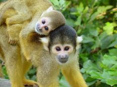
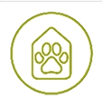

Wasberen zijn born to be wild
Meer over dit projectHelp de dieren met een donatie!

Exotische huisdieren
Serval xirus kreeg als huisdier niet de juiste verzorging
Chimpansee Linda werd uit het wild gesmokkeld
Illegale dierenhandel

Het laatste nieuws
naar overzicht
Aap gaat ook laatste Limburgse wasberen opvangen
lees verderKom langs in de opvangcentra van aap
In onze opvang geven we dieren in nood weer een veilige plek en professionele verzorging.
Samen maken we einde aan het leed van exotische dieren in europa
482
